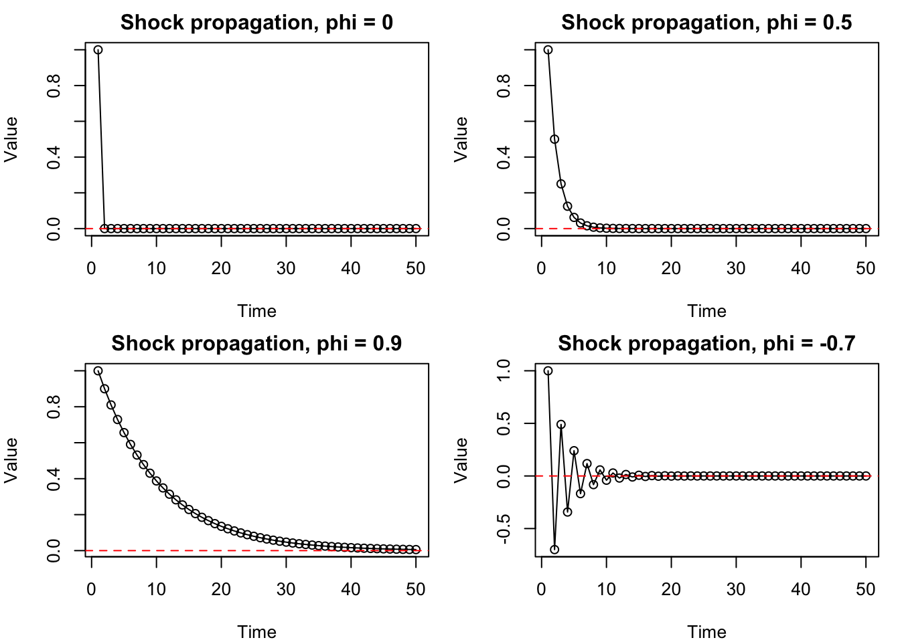
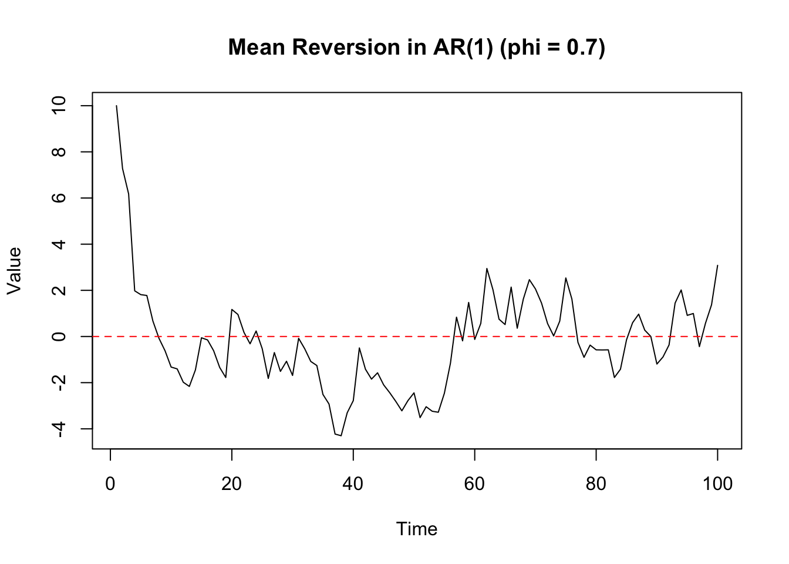

The autoregressive model of order 1 or AR(1) model is the simplest time series model with temporal dependence, but it captures essential features of many real-world time series, including persistence, shock propagation, and mean reversion. More complex time series models are built by extending this idea, combining multiple lags and interactions. Understanding AR(1) therefore provides the foundation for studying richer dynamic systems.
An AR(1) is a stochastic process indexed by time, defined by the recursive relation
\(\phi\) is a constant parameter controlling the strength of dependence,
\(\varepsilon_t\) is a white noise process with mean zero and variance \(\sigma^2\).
The AR(1) model introduces dependence through a simple feedback mechanism, where the present is a noisy version of the past.
At each time step, the value of the process is formed by combining:
a deterministic component (\(\phi X_{t-1}\)), carrying information from the past, and
a random shock (\(\varepsilon_t\)), introducing new randomness.
This simple mechanism transforms white noise into a process with memory and dynamic structure.
The AR(1) model can be interpreted as white noise with feedback. While white noise produces completely independent observations, the AR(1) process feeds past values forward into the future.
This creates temporal dependence:
if \(X_{t-1}\) is large, \(X_t\) tends to be large (depending on \(\phi\)),
if \(X_{t-1}\) is small, \(X_t\) tends to be small.
Unlike white noise, the past now contains information about the future.
Example: Simulate an AR(1) process with (\(\phi = 0.7\)):
When \(\phi = 0\), the model becomes \[
X_t = \varepsilon_t.
\] The process has no memory. Each value is determined only by the new random shock. This is simply white noise.
When \(\phi = 0.5\), each value carries forward half of the previous value. A positive value tends to be followed by another positive value, but the dependence is not very strong. Shocks persist for a short time before fading away. This produces a time series with mild smoothness and short-term memory.
When \(\phi = 0.9\), most of the previous value is carried forward. The process shows long runs above or below zero. Shocks decay slowly, so the series has strong persistence and appears much smoother than white noise. This is typical of systems where changes are gradual, such as prices, temperatures, demand, or population levels.
When \(\phi = -0.7\), the sign of the previous value tends to reverse. A positive value tends to be followed by a negative value, and a negative value tends to be followed by a positive value. This creates oscillating behaviour around the mean. The process is still stable because \(|\phi| < 1\), but the dependence is negative rather than positive.
In summary, the stable AR(1) model can generate a wide range of behaviours by simply changing the value of \(\phi\):
Value of \(\phi\)
Behaviour
Interpretation
\(\phi = 0\)
White noise
No memory
\(0 < \phi < 0.5\)
Low to moderate persistence
Short memory, faster decay of shocks
\(0.5 \leq \phi < 0.9\)
Moderate to high persistence
Long memory, slower decay of shocks
\(\phi \approx 0.9\) or higher
High persistence, close to a unit root
Very long memory, shocks persist for a long time
\(\phi < 0\)
Oscillation
Alternating behaviour
The key idea is that \(\phi\) controls how information from the past is carried into the future. By changing a single parameter, the AR(1) model can generate behaviour ranging from pure randomness to persistent movement and oscillation.
Memory and Shock Propagation
The defining feature of the AR(1) model is its memory. Unlike white noise, where shocks affect only a single time point, in an AR(1) process a shock influences future values through the recursive structure.
To see this, suppose a large positive shock occurs at time \(t\). Then:
\[
X_{t+1} = \phi X_t + \varepsilon_{t+1}
\]
so part of that shock carries forward. Substituting recursively, we find:
and continuing this process shows that the impact of the original shock is multiplied by successive powers of \(\phi\).
This reveals an important insight:
the effect of a shock at time \(t\) persists into the future,
but its magnitude decays geometrically as \(\phi^k\)1,
so the speed of decay is determined by \(|\phi|\).
This phenomenon is known as shock propagation:
shocks persist,
their influence diminishes over time,
the rate of decay is controlled by \(\phi\).
Example: Consider a shock of size 1 at time \(t=1\), and all future shocks are set to zero, plot the propagation of this shock under different values of \(\phi\).
set.seed(1234)n <-50phis <-c(0, 0.5, 0.9, -0.7)simulate_shock <-function(phi, n) { X <-numeric(n) X[1] <-1# initial shockfor (t in2:n) { X[t] <- phi * X[t-1] # no new noise }return(X)}par(mfrow =c(2, 2), mar =c(4, 4, 2, 1))for (phi in phis) { X <-simulate_shock(phi, n)plot( X,type ="o",main =paste("Shock propagation, phi =", phi),xlab ="Time",ylab ="Value" )abline(h =0, col ="red", lty =2)}

Python Version
import numpy as npimport matplotlib.pyplot as pltnp.random.seed(1234)n =50phis = [0, 0.5, 0.9, -0.7]def simulate_shock(phi, n): X = np.zeros(n) X[0] =1# initial shockfor t inrange(1, n): X[t] = phi * X[t-1] # no new noisereturn Xfig, axes = plt.subplots(2, 2, figsize=(10, 6))for ax, phi inzip(axes.flatten(), phis): X = simulate_shock(phi, n) ax.plot(X, marker='o') ax.axhline(0, color="red", linestyle="--") ax.set_title(f"Shock propagation, phi = {phi}") ax.set_xlabel("Time") ax.set_ylabel("Value")plt.tight_layout()plt.show()
These plots isolate the pure effect of memory:
\(\phi=0\): the shock has no effect beyond the initial time point.
\(\phi=0.5\): the shock decays moderately, halving in size each time step (short memory).
\(\phi=0.9\): the shock decays very slowly, retaining most of its size for many time steps (long memory).
\(\phi=-0.7\): the shock alternates in sign while decaying, creating an oscillating pattern (oscillating decay).
In all cases with \(|\phi| < 1\), the shock eventually disappears, but the speed and pattern of decay depend critically on \(\phi\).
A single disturbance does not vanish immediately—it echoes through time, gradually fading according to the system’s memory.
This idea is central to understanding:
mean reversion (how systems return to equilibrium),
autocorrelation (dependence across time), and
multivariate dynamics (how shocks spread across systems).
Mean Reversion
A key behaviour exhibited by many AR(1) processes is mean reversion. This refers to the tendency of the process to drift back toward its long-run average over time. In other words, mean reversion describes the long-run outcome of shock propagation: while shocks can cause temporary deviations, the process eventually returns to its mean.
Suppose the process takes on a large positive value at some time (t). Then:
\[
X_{t+1} = \phi X_t + \varepsilon_{t+1}
\]
If \(|\phi| < 1\), the term \(\phi X_t\) is smaller in magnitude than \(X_t\). This means:
large positive values tend to decrease over time,
large negative values tend to increase toward zero,
the process is “pulled back” toward its mean.
This stabilising effect is what we call mean reversion.
Mean reversion depends critically on the value of (\(\phi\)):
\(|\phi| < 1\): mean-reverting → stable behaviour
\(\phi = 1\): no mean reversion → random walk (no pull toward mean)
\(|\phi| > 1\): explosive behaviour → deviations grow over time
Thus, the condition \(|\phi| < 1\) ensures that shocks eventually decay and the process returns toward equilibrium.
Example: Visualise mean reversion in an AR(1) process with (\(\phi = 0.7\))
set.seed(1234)n <-100phi <-0.7epsilon <-rnorm(n, 0, 1)X <-numeric(n)X[1] <-10# start far from the meanfor (t in2:n) { X[t] <- phi * X[t-1] + epsilon[t]}plot( X,type ="l",main ="Mean Reversion in AR(1) (phi = 0.7)",xlab ="Time",ylab ="Value")abline(h =0, col ="red", lty =2)

Python Version
import numpy as npimport matplotlib.pyplot as pltnp.random.seed(1234)n =100phi =0.7epsilon = np.random.normal(0, 1, n)X = np.zeros(n)X[0] =10# start far from the meanfor t inrange(1, n): X[t] = phi * X[t-1] + epsilon[t]plt.plot(X)plt.axhline(0, color='red', linestyle='--')plt.title('Mean Reversion in AR(1) (phi = 0.7)')plt.xlabel('Time')plt.ylabel('Value')plt.show()
In this model, the long-run mean is zero. From the plot, we observe:
the process starts far above zero,
over time, it is pulled back toward zero,
random shocks cause fluctuations, but do not prevent long-run stabilisation.
This illustrates that:
deviations from the mean are temporary, not permanent.
Key Contrast with White Noise
Feature
White Noise
AR(1)
Dependence
None
Depends on past
Memory
No
Yes
Shock effect
Immediate only
Persistent
Structure
None
Dynamic
AR(\(p\)) Model
More general autoregressive models allow dependence on multiple past values:
where \(\phi_1, \dots, \phi_p\) are parameters controlling the influence of each lag. The AR(\(p\)) model can capture richer temporal behaviour because the present value may depend on several previous values, not just the most recent one.
Example: Simulate AR(\(p\)) processes with different parameters: \(p = 0, 1, 2, 3\) and various \(\phi\) values.